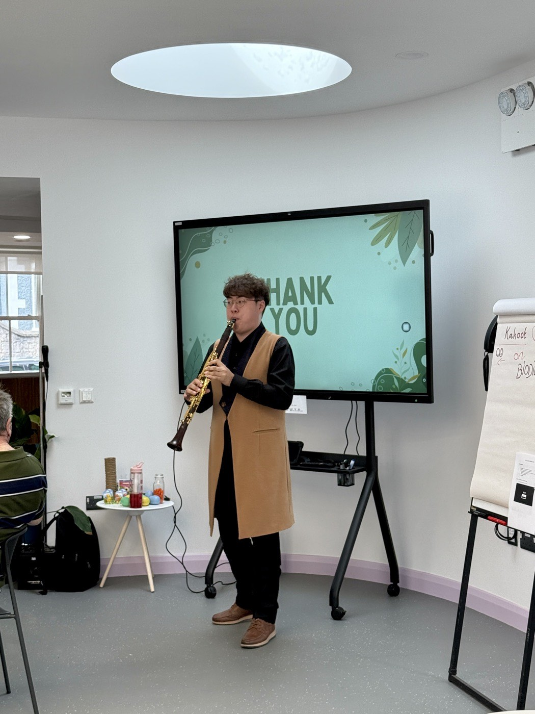

완전 초보라면
연주를 배웁니다
리코더 앙상블 과정에 오세요. 첫 주에 첫 소리를 내고, 악보는 처음부터 배우고, 앙상블에서 내 파트를 맡고, 학기 끝에는 음악회를 엽니다.
참여하기
오디션도, 사전 경험도, 준비할 것도 없습니다. 어디에 해당하는지 모르겠다면 그렇게 적어 주세요. 아주 평범한 문의입니다.
리코더 앙상블 과정에 오세요. 첫 주에 첫 소리를 내고, 악보는 처음부터 배우고, 앙상블에서 내 파트를 맡고, 학기 끝에는 음악회를 엽니다.

무료 강의·연주에 오시거나, 공연을 보러 가는 소그룹에 끼세요. 미리 준비하고, 나란히 앉아 듣고, 끝나고 이야기를 나눕니다. 혼자서는 잘 안 가게 되는 분, 아일랜드에 막 오신 분을 특히 환영합니다.

Letters Ensemble은 더블린에 사는 아마추어 연주자에게 열려 있습니다. 토요일마다 모여 연습하고, 커뮤니티 공간에서 연주합니다. 찾아가는 음악회 준비를 돕는 자원봉사자도 환영합니다.

찾아가는 음악회를 부르시거나, 그 공동체를 위한 과정을 여실 수 있습니다. 공공배상책임보험을 들어 두었고, 신원조회가 필요한 일은 시작 전에 Garda 신원조회를 마칩니다.
네 갈래는 어떻게 이어지는가
어느 쪽인지 고르지 않으셔도 됩니다. 지금 함께 연주하는 분들 대부분이 처음에는 들으러 오셨고, 저희가 연주하는 방 중 둘은 음악회에 오셨던 분이 내어 주신 것입니다.
네 가지 길, 하나의 문
보내신 다음에는
모든 문의는 창립자에게 바로 갑니다. 답장을 쓰는 사람이 그 방에서 함께 있을 사람입니다. 작성할 서식도, 첨부할 것도 없습니다.
공간을 여는 분들께
네 가지
나머지 전부
비용 이야기. 모든 프로그램에 무료·할인 자리를 둡니다. 공간이 자체 예산으로 진행비를 내주시면 그 방에 계신 분들은 전원 무료가 되고, 그 돈이 다른 방의 무료 자리까지 지킵니다. 그럴 형편이 아니어도 우선 이야기부터 나눕니다.